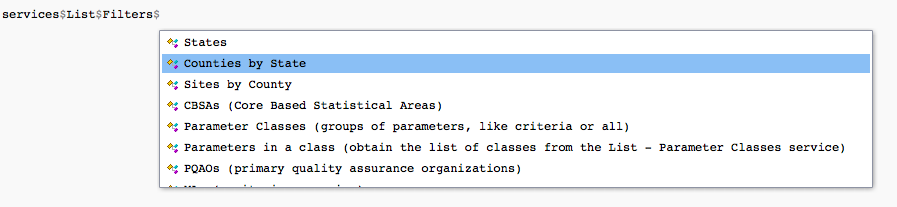

vignettes/a06_make-a-more-complex-call.Rmd
a06_make-a-more-complex-call.RmdSome calls require additional API variables like the state or county of interest. For these calls, we can easily add variables to the base call by passing them in as arguments to a get function, or as a second argument to perform.call().
To start off, suppose we want to find out what counties and respective parameter codes exist for North Carolina. We can again use the services object, and check its List service as in Making your first call.

It looks like the Counties by state filter would be appropriate since we’re trying to determine the county parameter codes for North Carolina.
This specific service and filter can be done through get_counties_in_state(). Each get function has defined arguments for each required and optional variable. All of these functions and the documentation on variables for each are available in the Reference page. We can add each of these variables by passing them as arguments through the user friendly functions.
Notice we have a required variable state.fips. Since we’re looking for counties in North Carolina, we can use the parameter code for North Carolina as the entry for state. We were able to determine all parameter codes for states in Making your first call so we look at our output there and find that the parameter code for North Carolina is 37.
For our example, once we know our specific state code for North Carolina, all we have to do is pass it as an argument in the corresponding function.
result <- get_counties_in_state(state.fips = '37')Similar to single variables, our higher level functions will require parameters for the service of our choice.
Suppose, for instance, we’re interested in finding daily ozone data for North Carolina, starting January 1, 2020 and ending on January 2, 2020, and we have determined the correct parameter codes for each API variable (please see Navigating API services or Figuring out API variables to understand how we could go about determining proper parameter codes for each of these variables).
result <- get_daily_summary_in_state(bdate = '20200101',
edate = '20200102',
state.fips = '37',
param = '44201')Similar to before, we can also go about placing the call through another method by manually finding the endpoint. From before, we can locate the endpoint through the services object, check its List service, and select the filter we are looking for.
services$List$Filters$`Counties by State`## $Endpoint
## [1] "list/countiesByState"
##
## $RequiredVariables
## [1] "email, key, state"
##
## $OptionalVariables
## [1] ""
##
## $Example
## [1] "Example; returns all counties in North Carolina:https://aqs.epa.gov/data/api/list/countiesByState?email=test@aqs.api&key=test&state=37"Now, we can perform the call by putting together the endpoint for listing counties by state and the particular state we’re interested.
endpoint <- services$List$Filters$`Counties by State`$Endpoint
state.code <- '37'
result <- perform.call(endpoint = endpoint, variables = state.code, name = "state")Note that we specified the additional variables we’d be adding with variables = state.code, and we inserted the API variable name as name = state in the function. An alternative is to simply declare the parameter code with the API variable name as follows.
endpoint <- services$List$Filters$`Counties by State`$Endpoint
state <- '37'
result <- perform.call(endpoint = endpoint, variables = state)In the case of multiple variables, we can make a list of variables and pass the list into perform.call() as the second argument.
From before, we’re interested in finding daily ozone data for North Carolina, starting January 1, 2020 and ending on January 2, 2020, and we have determined the correct parameter codes for each API variable.
For this, we create a list that has the appropriate API variable names declared for parameter codes.
endpoint <- 'dailyData/byState'
variable.list <- list("state" = '37',
"bdate" = '20200101',
"edate" = '20200102',
"param" = '44201')
result <- perform.call(endpoint = endpoint, variables = variable.list)Calling the same large dataset frequently can take time to load each time, but we can cache this data by storing it in the user’s specified directory for convenience. In each get function and perform.call() we can specify as an argument whether the call is cached or not and the directory the call is saved in.
For example, if we plan to use the daily ozone data for North Carolina from January 1, 2020 to March 1, 2020 many times over, we can specify we want to cache this data in user friendly functions.
result <- get_daily_summary_in_state(bdate = '20200101',
edate = '20200102',
state.fips = '37',
param = '44201',
cached = TRUE,
cache_directory = "~/epair/cache")Or similarly, cache this data using the endpoint method.
endpoint <- 'dailyData/byState'
variable.list <- list("state" = '37',
"bdate" = '20200101',
"edate" = '20200301',
"param" = '44201')
result <- perform.call(endpoint = endpoint,
variables = variable.list,
cached = TRUE,
cache_directory = "~/epair/cache")Without specification of these arguments, the get and perform.call() functions default will always cache the call in the directory “~/epair/cache” based in the current working directory.